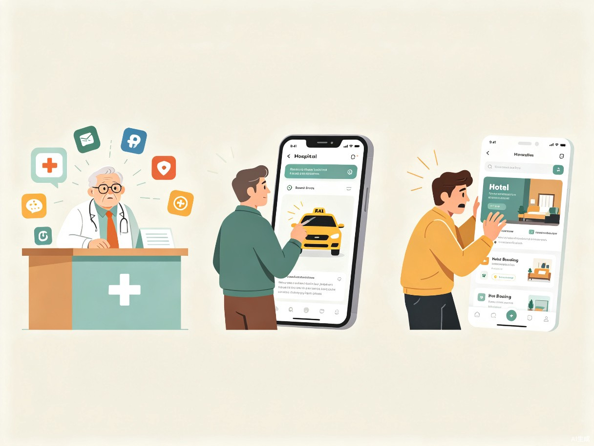
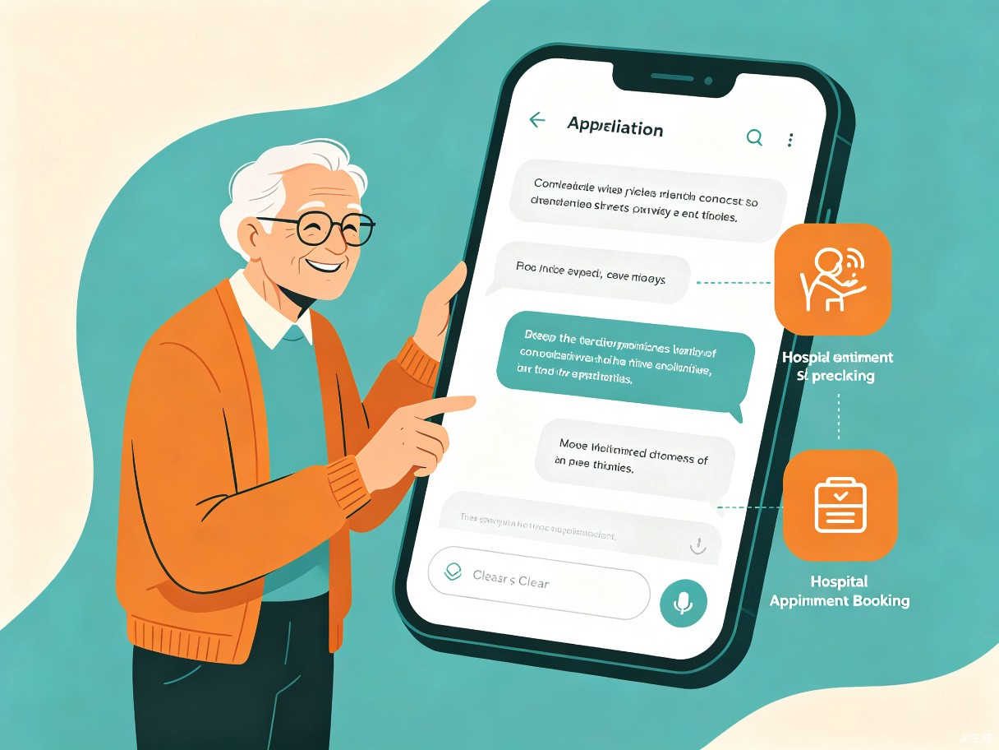

1 创意名称与介绍
创意名称
衔接未来 — 一站式智能生活服务助手
想解决什么问题
随着数字化服务的全面普及，医院挂号、网约车、酒店预订、旅行规划等日常需求已高度依赖智能手机。然而，大量中老年用户及数字技能薄弱人群面临着严重的科技使用断层问题——他们拥有智能手机，却无法独立完成各类APP的操作流程。"衔接未来"致力于搭建一座桥梁，让这些用户也能平等、便捷地享受数字化生活的便利。
为什么会想到做这个
这一真实经历触发了我们的思考：当各行各业都在加速数字化转型时，是否有一群人正在被悄然"遗落"？他们不是不想用，而是不会用、看不清、理解不了。我们希望用技术的温度，弥合这道无形的鸿沟。
产品形态
以微信小程序和独立APP为核心载体，辅以网页端，覆盖不同用户的使用习惯和设备条件。小程序降低使用门槛（无需额外下载），APP提供更完整的功能体验，网站则作为信息展示和远程协助入口。
2 目标用户及痛点
面向哪些用户
核心用户群体为对智能手机操作生疏的人群，主要包括：
中老年群体
年龄50岁以上，视力下降、手指灵活性降低，对复杂界面操作感到困难
低数字素养用户
不熟悉文字输入、界面导航等基本操作，甚至不会编辑文字
特殊需求人群
视障、认知障碍等需要无障碍交互支持的用户
理论上，所有使用智能手机的人群均可从简化流程中受益——毕竟，谁不希望生活更简单呢？
使用场景

当前痛点
- 应用碎片化 — 医院、酒店、旅行、打车各有专属APP或小程序，用户需要在多个平台间反复切换
- 操作门槛高 — 界面文字小、按钮密集、步骤繁琐，老年用户难以独立完成操作
- 输入障碍 — 大量用户不会拼音输入或手写识别率低，连基本的搜索框都无法使用
- 信任缺失 — 对线上支付、个人信息填写缺乏安全感，不敢独自操作
- 依赖他人 — 多数情况下需要子女或年轻人代为操作，丧失生活自主权
3 产品方案
核心功能
"衔接未来"通过对话式交互重新定义服务流程，将复杂的操作转化为自然、直观的对话体验：
对话式预约
用户只需用语音或文字描述需求（如"帮我挂明天上午的内科号"），系统自动完成预约流程
智能攻略生成
根据用户需求自动生成出行计划、就医指南等，包含交通、时间、注意事项等完整信息
一站式聚合
整合医疗、出行、住宿、餐饮等多领域服务，用户无需在多个APP间切换
远程协助
支持子女/家人远程协助模式，在用户授权下帮助完成复杂操作
交互流程
flowchart LR
A[用户语音/文字输入需求] --> B{智能意图识别}
B --> C[医疗挂号]
B --> D[出行打车]
B --> E[酒店预订]
B --> F[旅行规划]
C --> G[对话引导确认信息]
D --> G
E --> G
F --> G
G --> H[自动完成预约/订购]
H --> I[推送确认通知]
I --> J[一键查看/管理订单]

无障碍设计
大字体模式
全局支持超大字体显示，关键信息高对比度呈现
语音交互
全程语音输入+语音播报，减少打字和阅读依赖
极简界面
每屏只展示一个核心操作，避免信息过载
4 价值与意义
效率提升
通过对话式交互，用户只需"说一句话"即可完成预约、计划、订购等流程，免去研究各个APP操作步骤的时间成本。原本需要子女代为操作的30分钟流程，可缩短至3分钟内独立完成。
社会价值
降低数字服务使用门槛，消除"不会用"的心理顾虑，让科技真正普惠每一个人。帮助中老年群体重获生活自主权，减少对子女的依赖，提升生活尊严感和幸福感。同时响应国家"适老化改造"政策号召，推动数字包容性社会发展。
商业价值
作为聚合平台，可有效进行平台流量分流，为合作商家精准匹配目标用户。基于用户真实需求的理性推荐机制，避免信息轰炸和诱导消费，建立用户信任。未来可拓展会员增值服务、广告合作、佣金分成等多元商业模式。
让科技不再有代沟
衔接未来 — 用温度连接每一个人与数字化生活